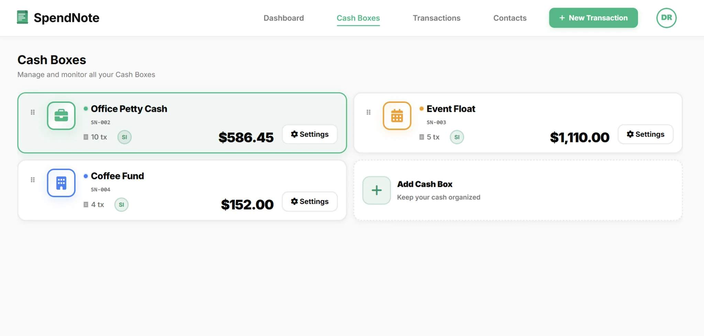

Why You Need a Petty Cash Policy
A written petty cash policy establishes clear rules for how your organization handles small cash transactions. Without a policy, you risk:
- Unauthorized spending: Employees may use cash for non-business expenses
- Poor documentation: Missing receipts and incomplete vouchers make reconciliation difficult
- Audit failures: Lack of controls can trigger compliance issues
- Cash shortages: Unclear accountability leads to discrepancies
A formal policy prevents these problems by defining who can access the fund, what expenses are allowed, and how transactions must be documented.
Petty Cash Policy Template
Use this template as a starting point for your organization. Customize the amounts, approval levels, and procedures to match your needs.
1. Purpose
This policy establishes procedures for managing petty cash funds to ensure proper controls, accurate record-keeping, and appropriate use of company resources.
2. Fund Size and Limits
Maximum fund balance: $500
Maximum single transaction: $50
Replenishment threshold: When fund balance falls below $100
3. Authorized Expenses
Petty cash may only be used for the following types of expenses:
- Office supplies (pens, paper, folders, etc.)
- Postage and shipping costs
- Minor equipment repairs
- Employee reimbursements for approved small purchases
- Taxi or parking fees for business purposes
- Refreshments for client meetings
Prohibited expenses: Personal items, meals for employees (unless client-related), cash advances, or any expense over the single transaction limit.
4. Custodian Responsibilities
The petty cash custodian is responsible for:
- Securing the cash in a locked box or drawer
- Issuing cash only for authorized expenses
- Collecting receipts and vouchers for every transaction
- Maintaining the petty cash log
- Reconciling the fund weekly
- Requesting replenishment when needed
5. Documentation Requirements
Every petty cash transaction must be documented with:
- A completed petty cash voucher including date, amount, purpose, and recipient
- Signatures from both the custodian and recipient
- Original receipt attached (for purchases over $10)
6. Approval Process
Transactions under $25: Custodian approval only
Transactions $25-$50: Requires manager approval before disbursement
Transactions over $50: Not allowed from petty cash; use regular expense reimbursement process
7. Reconciliation Procedures
Frequency: Weekly (every Friday by 4 PM)
Process:
- Count remaining cash
- Total all vouchers and receipts since last reconciliation
- Verify that cash on hand + vouchers = fund balance
- Investigate any discrepancies immediately
- Document reconciliation in petty cash log
8. Replenishment
When the fund balance falls below $100, the custodian must:
- Complete a replenishment request form
- Attach all vouchers and receipts since last replenishment
- Submit to Finance for review and approval
- Receive a check to restore the fund to $500
9. Consequences for Policy Violations
Violations of this policy may result in:
- Verbal or written warning
- Removal of petty cash access privileges
- Requirement to reimburse unauthorized expenses
- Disciplinary action up to and including termination
10. Policy Review
This policy will be reviewed annually and updated as needed to reflect changes in business operations or regulatory requirements.

Customizing the Template for Your Organization
Adjust these elements based on your specific needs:
Fund Size
Smaller organizations may only need $100-$200. Larger offices with frequent small expenses might require $500-$1,000. Base your fund size on typical monthly petty cash volume.
Transaction Limits
Set single transaction limits that match your expense patterns. If most petty cash purchases are under $20, a $50 limit is reasonable. Higher limits increase risk.
Reconciliation Frequency
High-volume funds should be reconciled daily or after every transaction. Low-volume funds can be reconciled weekly or monthly. More frequent reconciliation catches errors faster.
⚠️ Important: Segregation of Duties
For strong internal controls, the person who reconciles petty cash should not be the same person who has custody of the fund. If your organization is too small for this separation, implement compensating controls like surprise audits or manager spot-checks.
Digital Alternative: Automated Policy Enforcement
Instead of relying on manual policy compliance, you can use SpendNote to automatically enforce your petty cash rules:
- Transaction limits: Set maximum amounts per transaction or per user
- Approval workflows: Route transactions over certain amounts to managers automatically
- Required documentation: Block transactions without proper descriptions or recipient details
- Automatic reconciliation: Real-time balance tracking with instant discrepancy alerts
- Audit trail: Every transaction logged with timestamps, user IDs, and full details

Best Practices for Policy Implementation
- Train all employees: Make sure everyone who uses petty cash understands the policy
- Post the policy visibly: Keep a copy near the petty cash box for easy reference
- Review regularly: Update the policy annually or when business needs change
- Enforce consistently: Apply the same rules to all employees, regardless of position
- Document exceptions: If you must make an exception, document the reason and get approval
Also see: Petty cash reconciliation, Petty cash voucher template, How to fill out a petty cash voucher, Petty cash log template, Digital petty cash book.